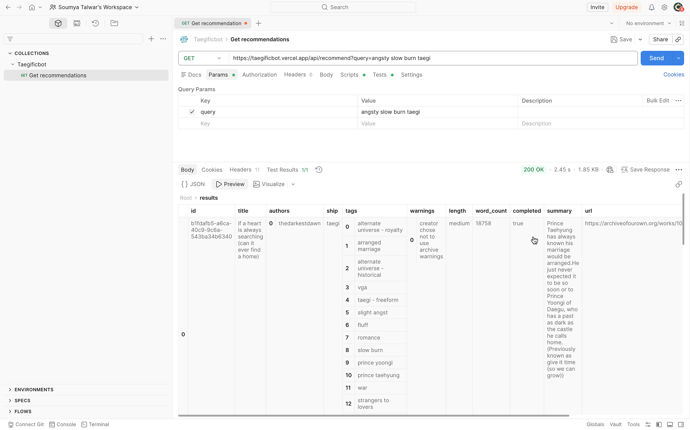
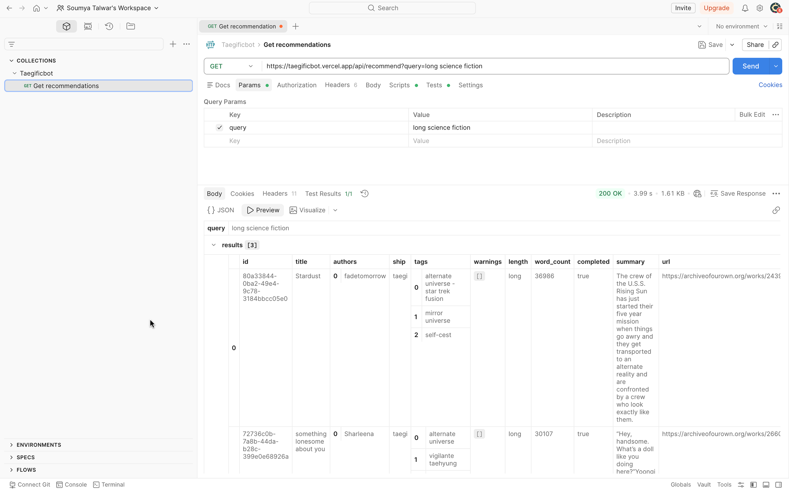
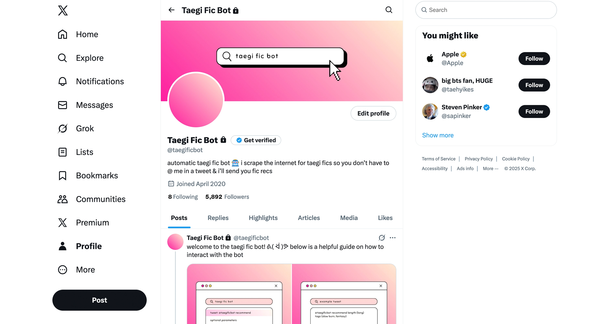
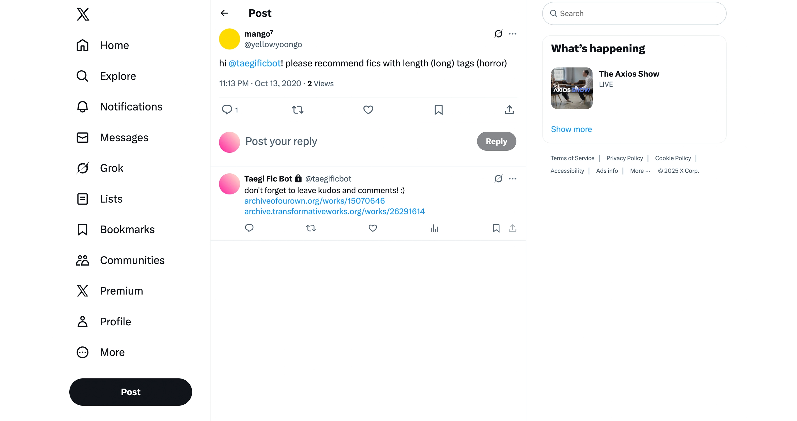

[ @TAEGIFICBOT ]
GET SMART FANFICTION RECOMMENDATIONS FROM MY API
Node.JS / Supabase / Pgvector / Gemini Embeddings / Puppeteer / Cheerio / Vercel Built in 2020 / Reengeneered in 2026Let me explain
On top of that, I built a Twitter bot. You could tag this bot in a tweet and mention what you were looking for—specific tropes, lengths, or pairings—and it would reply with recommendations. It worked really well, but I eventually took it down when I stepped away from social media for personal reasons.
In 2026, I revisited the project with a different goal. Instead of tying it to a platform, I wanted to rebuild it as a standalone system that anyone could use or build on top of. So I re-engineered it as an API.
The core idea was to move beyond simple filters and build something that could understand natural language queries. I generated embeddings for each story using Gemini, stored them in a vector database using pgvector on Supabase, and implemented semantic search to retrieve the most relevant results. On top of that, I added a custom ranking layer that combines vector similarity with structured metadata like tags, length, and completion status—so the results feel more intentional and tailored.
The final system lets you send a natural language query and get back a curated set of fanfiction recommendations. Even though the original bot no longer exists, this version makes the underlying system reusable—and opens it up for other interfaces or experiments in the future.



The older Twitter bot

API demo
Github repo